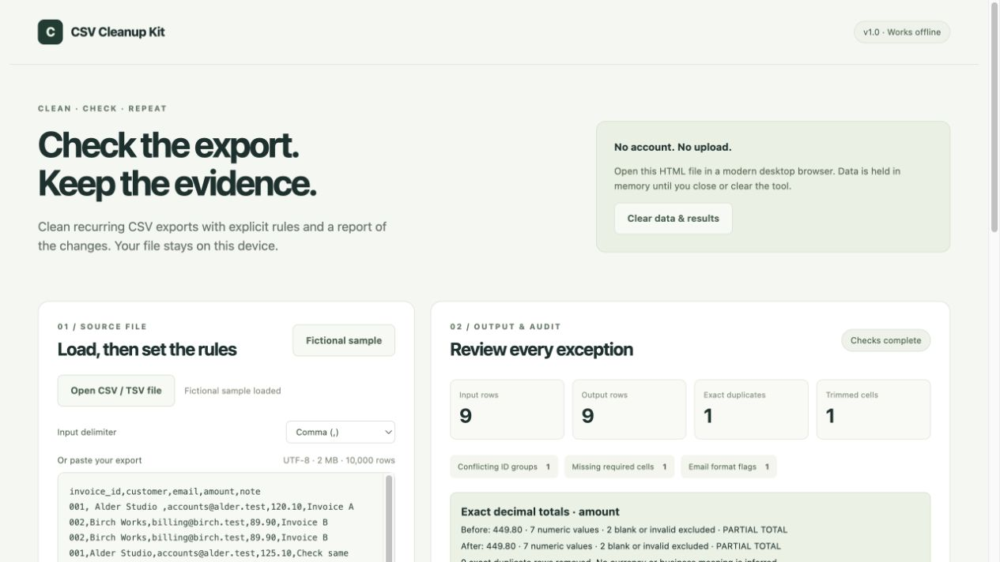

Reuse your rules
Save delimiter, selected columns and cleanup settings. Import the rules for next month’s file with the same headers.
FOR RECURRING SMALL CSV EXPORTS
A local toolkit for checking invoice exports, contact lists and small operational files before you import them elsewhere.

Save delimiter, selected columns and cleanup settings. Import the rules for next month’s file with the same headers.
Find different records with the same identifier. Flag missing required values and basic email format issues. Nothing is guessed.
Download cleaned CSV, a full issue log and JSON audit report. Exact decimal totals make changes in selected amounts visible.
WHAT YOU RECEIVE
An offline package; no hosted software account.
The free demo handles comma-separated CSV, whitespace, exact duplicates and a numeric total. The toolkit adds a self-contained offline file, file import, semicolon / tab input, reusable rules, conflicting identifier flags, required-value checks, basic email format flags and an issue CSV. It includes a guide and expected sample outputs.
The tool reads your selected file in memory and exports a separate output. It has no network requests, analytics or external scripts. Keep your original export and review every exception before using the result.
UTF-8 CSV / TSV up to 2 MB and 10,000 data rows, with unique nonempty headers. Choose comma, semicolon or tab. Numbers must use dot decimals, without grouping, currency symbols or exponents. Other formats need preparation before import.
It flags syntax and reports arithmetic under the rules you choose. It does not certify accounting or tax correctness, validate business meaning, confirm email deliverability or choose which conflicting record is right.
Core checks cover parsing, exact decimals, duplicate and conflict handling, missing values, rule validation and guarded exports. The interface has been checked in the Codex in-app browser. Each product version lists its validation in the guide. No paid customer results or other browser compatibility are implied.